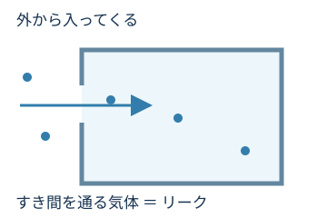
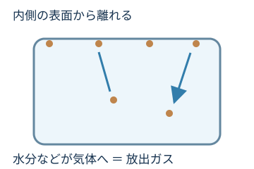
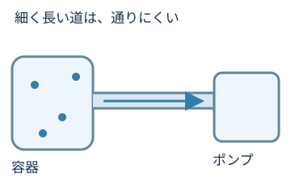

外から入る
すき間を通って気体が入る。
「圧力が下がらない」は、ポンプの故障だけでは説明できません。気体の出入りをたどります。

さっきから動かしてるのに、圧力の数字が下がらないよ。

外へ出す気体だけじゃなくて、増える気体もあるのかも。

よい着眼点です。「入る・出てくる・通りにくい」の3つに分けて考えましょう。
すき間を通って気体が入る。
壁や部品から気体が出る。
配管や弁が気体の通り道を狭める。
ポンプが動くことと、目的の圧力に達することは別。

容器や配管のつなぎ目にすき間があると、外から気体が入り続けます。排気しても気体が補われるため、圧力が下がりにくくなります。
つなぎ目を密閉する部品がシールです。傷んだシールや、挟まったごみが原因になることもあります。

口がきちんと閉じていない袋みたいだね。

容器の壁や部品には、水分などが付いています。圧力を下げると、それらが表面から離れたり、材料の中から出てきたりします。これが放出ガスです。

穴が見つからなくても、壁から気体が補われることがあるんだ。
はい。汚れや油分、水分も気体の発生源になり、排気に時間がかかる原因になります。
リーク＝外から。放出ガス＝内側の表面や材料から。

細く長い配管や、十分に開いていない弁は、気体が外へ出るのを妨げます。ポンプだけを大きくしても、通り道が狭ければ効果が限られることがあります。
出口までの道が細かったら、外に出にくいんだね。
真空計の単位・測定範囲やエラー表示を確認する。
ふたを開けた？ 部品を入れ替えた？ 湿ったものを入れた？
圧力の変化と装置の状態を担当者へ伝える。
ここで学ぶのは原因の見分け方の入口です。複数の原因が重なっていることもあり、圧力の数字だけでは断定できません。
実際の点検・分解・弁操作は、装置の手順書と担当者の指示に従ってください。
リークやシールの状態を考える。
放出ガス・汚れ・水分も原因になる。
配管・弁・測定の状態も含めて考える。
真空をつくり、測り、保つ。次は、この工夫が暮らしや製造にどう役立つかを見てみましょう。